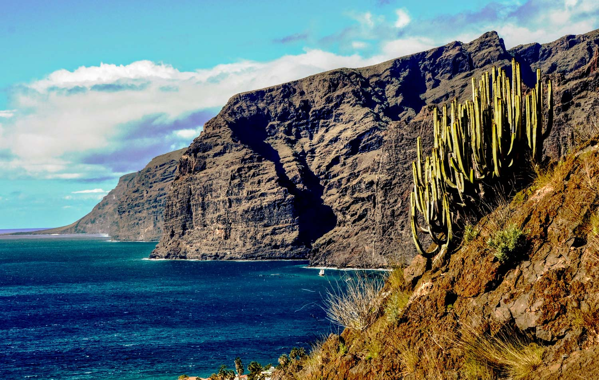
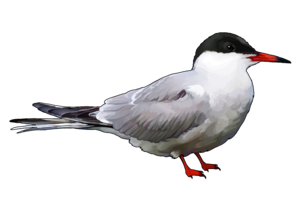
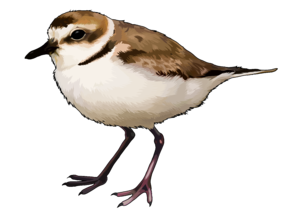

Las costas son, por lo general, accidentadas y abruptas, aunque lo son más en la zona norte que en la sur. No obstante 67,14 kilómetros de la costa tinerfeña lo representan playas, solo superada en este aspecto por la isla de Fuerteventura. En el litoral septentrional son frecuentes las playas de cantos rodados o de arena negra, mientras que en la vertiente sur y suroeste de la isla predominan las playas con arenas más finas y de tonalidades más claras.
Las zonas costeras de Tenerife, por su extensión y diversidad, engloban diferentes tipos de hábitats en si mismas y, por tanto, muchas especies de aves diferentes. En está página se muestran a dos de ellas: el Chorlitejo Patinegro y el Charrán Común.
Ave marina que también recibe el nombre de golondrina de mar. Es de color blanco, con una mancha gris en las alas y tiene el pico y las patas rojas. Se distribuye por las regiones subárticas y templadas de Europa, Asia y Norteamérica. Realiza largas migraciones, en invierno se encuentra en los océanos tropicales y subtropicales. En Canarias se observa en todas las islas.
Este charrán es de tamaño mediano, casi llega a los 40 cm de longitud (32-39 cm de media de largo, y entre 72 y 78 cm de envergadura alar). El plumaje es claro, generalmente blanco y gris en las alas y el dorso. El pico y las patas son de color rojo, aunque en invierno el pico del adulto se torna más oscuro. En verano, también en los ejemplares adultos, se observa la parte de arriba de la cabeza, llamada capirote, de color negro y se extiende hasta la nuca. Los jóvenes, por su lado, presentan una tonalidad más ocre en el dorso, el pico oscuro y la parte inferior del mismo naranja, y las patas de un naranja también pero más pálido. Por último, los individuos con unos años muestran una mancha oscura en los extremos de las alas. Entre los charranes, el charrán común es el que posee la cola más corta y el vuelo menos ligero. En cuanto al canto, es muy ruidoso, sobre todo en la época de reproducción, emite una especie de “kit-kit-kit” rápido y un “kierri-kierri-kierri”. El reclamo es parecido a un “krii-arr” largo.
Su alimentación se basa en pequeños peces, no obstante, también ingiere una gran cantidad de crustáceos e insectos. Suele pescar en bandadas sobre el océano y con menos frecuencia en la costa y de forma territorial.
Vive en una gran variedad de hábitats, desde playas arenosas hasta lagos y ríos del interior, sin olvidar las repisas de los acantilados; en áreas tanto de roca, como de arena o de vegetación. En la Península Ibérica, para situar sus nidos elige preferentemente zonas del litoral, sobre todo aguas tranquilas de fondo arenoso. Y en Canarias, sin embargo, nidifica en roques costeros.
El chorlitejo patinegro, frailecillo blanco, chorlo nevado, o pollito de mar, como también se le conoce, es un ave limícola, es decir, que vive en las costas y riberas. Se caracteriza por poseer unas plumas negras en forma de collar. El plumaje es blanco en las partes inferiores y pardo grisáceo en las superiores, y las patas y el pico negro. Se distribuye ampliamente por España y en Canarias se observa en todas las islas.
Esta ave mide entre 15 y 17 cm de largo y de 42 a 45 cm de envergadura. Se caracteriza por tener una línea negra a modo de collar abierto y el pico y las patas muy oscuras. En la época de celo, el macho presenta unas líneas negras en la cara que enmarcan las cejas y la frente de color blanco. La parte superior de la cabeza, llamada píleo, es gris hasta la nuca donde se torna roja. La hembra no presenta el rojo en la nuca y el negro lo cambia por un marrón oscuro. El sonido de este chortilejo es un “pirr” breve y fuerte, y el reclamo durante el periodo de reproducción varía mucho, desde un kruuui-kruuui hasta un “ki-ki-ki”.
Se alimenta de los pequeños animales que encuentra en la orilla del mar, de las lagunas, entre el lodo… Principalmente de insectos, crustáceos y moluscos. Los busca y cuando los encuentra, corre velozmente hacia ellos.
Cría en playas de arena, lagunas y marismas de agua salada y con poca o nula vegetación.